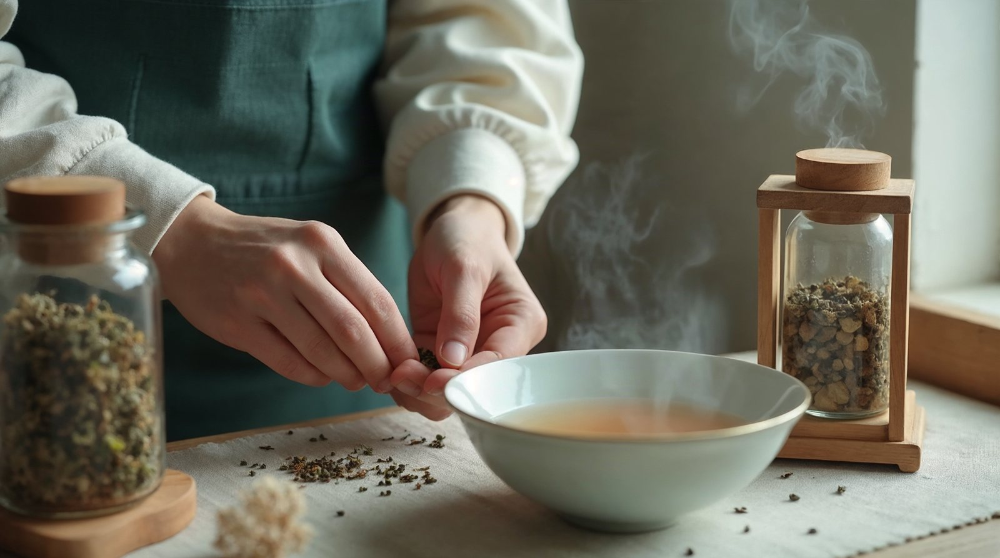
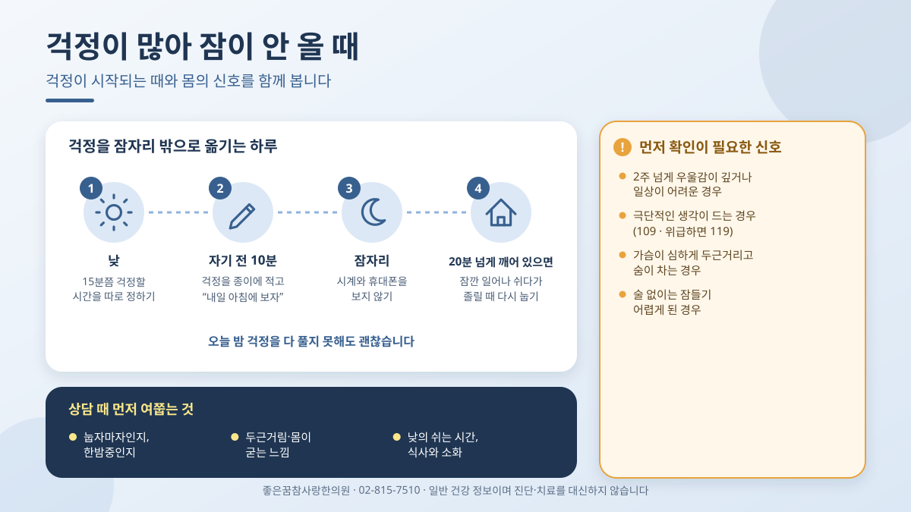

이종호 한의사 감수좋은꿈참사랑한의원 대표원장 (한의사 면허번호 19769)발행 2026-11-23 · 수정 2026-11-26
이 글의 차례
몸은 피곤한데 누우면 머리가 더 또렷해지는 밤이 있습니다. 걱정은 낮에 미뤄 둔 일이 밤에 한꺼번에 찾아오는 것일 때가 많고, 잠을 못 잘까 하는 걱정이 또 하나의 걱정이 되기도 합니다. 걱정이 언제 시작되고 몸에서 어떤 신호가 함께 오는지 알면 손댈 곳이 보입니다.
일주일에 하루 이틀 그런 밤이 있는 정도라면 생활 요령부터 2~3주 해 보시고, 그래도 일주일에 세 번 넘게 잠들기까지 30분 이상 걸리는 날이 이어지면 진료에서 함께 살펴보시길 권합니다.
왜 이런 불편이 생길 수 있나요
- 낮 동안 쉴 틈 없이 지내다가 조용해지는 잠자리에서야 생각이 정리되기 시작하는 경우
- 긴장이 이어지면 몸이 깨어 있는 상태를 유지하려는 쪽으로 기울어 잠들기 어려워질 수 있습니다.
- "오늘도 못 자면 어떡하지" 하는 걱정이 누울 때마다 반복되어 잠자리와 걱정이 짝지어지는 경우
- 늦은 카페인, 자기 전 휴대폰 확인처럼 머리를 깨우는 습관이 겹치는 경우
- 결정하지 못한 일이 남아 있으면 머리가 그 일을 붙잡고 되풀이해서 떠올리기 쉽습니다.
한의학에서는 걱정과 함께 가슴 답답함, 소화, 몸의 열감이 어떻게 따라오는지도 함께 살핍니다. 생각이 많을 때 입맛이 떨어지고 속이 더부룩해지는 분, 반대로 몸에 열이 오르고 얼굴이 달아오르는 분처럼 같은 걱정도 몸에서 드러나는 모습이 다릅니다.
먼저 이렇게 여쭙니다
- 걱정이 눕자마자 시작되나요, 한밤중에 깨서 시작되나요?
- 걱정의 내용이 일, 돈, 건강, 가족 중 어느 쪽에 가까운가요?
- 가슴이 두근거리거나 몸이 굳는 느낌이 함께 오나요?
- 낮에는 쉬는 시간이 있나요? 식사와 소화는 어떤가요?
- 이런 밤이 언제부터, 일주일에 몇 번쯤 있나요?
스스로 먼저 살펴볼 수 있도록 확인 목록을 적어 둡니다. 세 가지 이상 해당하면 기록을 시작해 보시길 권합니다.
- 누운 뒤 30분 넘게 생각이 멈추지 않는 날이 일주일에 세 번 이상이다.
- 잠자리에 누우면 오히려 낮보다 머리가 맑아진다.
- 자기 전 마지막으로 하는 일이 휴대폰으로 일이나 뉴스를 확인하는 것이다.
- 걱정이 많은 날에는 소화가 막히거나 입맛이 떨어진다.
- 아침에 일어나면 턱이나 어깨가 뻐근하다.
- 잠을 못 잘까 봐 저녁부터 마음이 쓰인다.
- 낮에 걱정을 정리할 시간이 따로 없다.
일상에서 먼저 해 볼 수 있는 것
- 자기 전 10분, 걱정을 종이에 적어 두고 "내일 아침에 보자"라고 정하기
- 낮에 15분쯤 걱정할 시간을 따로 정해 그때 몰아서 생각하기
- 잠자리에서 시계와 휴대폰을 보지 않기
- 20분 넘게 잠이 안 오면 잠깐 일어나 조용한 불빛 아래서 쉬다가 졸릴 때 다시 눕기
- 걱정 옆에 "내가 지금 할 수 있는 일"과 "지금은 할 수 없는 일"을 나눠 적기
상황에 따라 조금씩 다르게 해 볼 수 있습니다.
- 예를 들어 퇴근 뒤에도 업무 메신저를 계속 확인하는 직장인의 경우, 잠들기 한 시간 전에는 알림을 끄고 다음 날 할 일 세 가지만 적어 두는 것부터 시작해 볼 수 있습니다.
- 예를 들어 아이를 재운 뒤에야 혼자 시간이 생기는 육아 중인 부모의 경우, 그 시간을 걱정을 정리하는 데 다 쓰기보다 낮에 5분이라도 생각을 적는 틈을 만들어 두면 밤에 몰리는 생각이 줄어들 수 있습니다.
- 예를 들어 가족의 건강 문제로 마음이 무거운 경우, 혼자 감당하기보다 다른 가족과 역할을 나누고 의논할 날을 정해 두는 것만으로도 밤에 붙잡고 있는 생각이 가벼워질 수 있습니다.
걱정 시간 정하기와 적어 두기는 2~3주 꾸준히 해 보고 판단하는 편이 좋습니다. 처음 며칠은 오히려 생각이 더 또렷해지는 느낌이 들 수도 있습니다. 비슷한 고민은 잠자리가 오히려 스트레스가 될 때와 밤에 자꾸 시계를 보게 될 때에서도 다룹니다.
마음을 위로하는 한마디
걱정이 많은 것은 마음이 약해서가 아니라 오래 책임을 지고 살아오셨다는 뜻이기도 합니다. 오늘 밤 걱정을 다 풀지 못해도 괜찮습니다.

한의원에서 함께 살필 수 있는 경우
- 걱정과 함께 가슴 답답함이나 두근거림이 잦은 경우, 긴장의 흐름과 잠을 함께 살핍니다.
- 걱정이 많을 때 소화가 막히거나 입맛이 흔들리는 경우, 식사와 소화를 함께 살핍니다.
- 몸이 늘 굳어 있고 어깨와 목이 뻐근한 경우, 몸의 긴장을 함께 살핍니다.
- 생활 요령을 2~3주 해 봐도 잠들기 어려운 밤이 일주일에 세 번 넘게 이어지는 경우, 잠과 몸의 상태를 함께 살핍니다.
좋은꿈참사랑한의원에서는 잠과 걱정의 모습을 충분히 듣고, 진맥을 기본으로 하고 필요하다고 판단될 때 설진·복진을 더해 몸 상태를 살핀 뒤 침이나 한약 상담 등 맞는 방법을 함께 정합니다.
첫 방문에는 맥을 짚으면서 언제부터 잠이 흔들렸는지, 걱정이 몰리는 시간대, 식사와 소화, 복용 중인 약을 차례로 여쭙습니다. 걱정의 내용을 자세히 말씀하기 어려우시면 몸에서 느껴지는 것만 말씀하셔도 괜찮습니다.
귀가 전에는 오늘 밤 해 볼 한 가지와 다음 진료에서 확인할 점을 알려 드리고, 다음 진료에서는 그 한 가지가 어땠는지부터 이어서 여쭙습니다.
이렇게 기록해 오시면 상담이 쉬워집니다
- 일주일 동안 누운 시각, 잠든 것 같은 시각, 깬 횟수
- 걱정이 시작된 때와 그날 있었던 일 한 줄
- 카페인과 술, 자기 전 화면 사용 시간
- 복용 중인 수면제·항불안제와 다른 약
- 걱정이 많던 날의 소화와 몸의 느낌(가슴 답답함, 어깨 뻐근함 등)
기록하는 방법은 수면 일기 쓰는 법을 참고하시면 됩니다.
이런 증상은 먼저 확인이 필요합니다
- 2주 넘게 우울감이 깊거나 일상이 어려운 경우
- 극단적인 생각이 드는 경우(☎ 109)
- 가슴이 심하게 두근거리고 숨이 차는 경우
- 술 없이는 잠들기 어렵게 된 경우
- 갑자기 숨이 막히고 가슴이 조이는 느낌이 몇 분씩 이어지는 경우
가슴 통증이나 숨참이 심하면 기다리지 말고 바로 가까운 응급실을 이용하세요. 복용 중인 수면제나 항불안제는 처방한 의사와 상의 없이 줄이거나 끊지 않습니다.

여쭙는 것
- 걱정이 눕자마자 시작되나요, 한밤중에 깨서 시작되나요?
- 걱정의 내용이 일, 돈, 건강, 가족 중 어느 쪽에 가까운가요?
- 가슴이 두근거리거나 몸이 굳는 느낌이 함께 오나요?
생활에서 해 볼 것
- 자기 전 10분, 걱정을 종이에 적어 두고 "내일 아침에 보자"라고 정하기
- 낮에 15분쯤 걱정할 시간을 따로 정해 그때 몰아서 생각하기
- 잠자리에서 시계와 휴대폰을 보지 않기
한의원에서 함께 살필 것
- 걱정과 함께 가슴 답답함이나 두근거림이 잦은 경우, 긴장의 흐름과 잠을 함께 살핍니다.
- 걱정이 많을 때 소화가 막히거나 입맛이 흔들리는 경우, 식사와 소화를 함께 살핍니다.
- 몸이 늘 굳어 있고 어깨와 목이 뻐근한 경우, 몸의 긴장을 함께 살핍니다.
먼저 확인이 필요한 신호
- 2주 넘게 우울감이 깊거나 일상이 어려운 경우
- 극단적인 생각이 드는 경우(109)
- 가슴이 심하게 두근거리고 숨이 차는 경우
한눈에 보는 표
| 구분 | 핵심 |
|---|---|
| 여쭙는 것 | 걱정이 눕자마자 시작되나요, 한밤중에 깨서 시작되나요? 걱정의 내용이 일, 돈, 건강, 가족 중 어느 쪽에 가까운가요? |
| 생활에서 해 볼 것 | 자기 전 10분, 걱정을 종이에 적어 두고 "내일 아침에 보자"라고 정하기 낮에 15분쯤 걱정할 시간을 따로 정해 그때 몰아서 생각하기 |
| 한의원에서 함께 살필 것 | 걱정과 함께 가슴 답답함이나 두근거림이 잦은 경우, 긴장의 흐름과 잠을 함께 살핍니다. 걱정이 많을 때 소화가 막히거나 입맛이 흔들리는 경우, 식사와 소화를 함께 살핍니다. |
| 먼저 확인이 필요한 신호 | 2주 넘게 우울감이 깊거나 일상이 어려운 경우 극단적인 생각이 드는 경우(109) |
자주 묻는 질문
걱정 때문에 잠이 안 오는 것도 한의원에서 보나요?
네. 걱정이 시작되는 시각과 몸의 긴장, 소화와 낮의 생활을 함께 여쭙고 생활 전체의 리듬 속에서 살핍니다.
걱정을 적어 두는 게 정말 의미가 있나요?
머릿속에서 맴도는 생각을 밖으로 옮겨 두면 잠자리에서 붙잡고 있을 일이 줄어드는 분이 많습니다. 부담이 되면 한 줄만 적어도 됩니다.
얼마나 지켜보고 진료를 받으면 될까요?
생활 요령을 2~3주 해 봐도 잠들기 어려운 밤이 일주일에 세 번 넘게 이어지거나 낮 생활이 힘들어지면 상담을 권합니다.
수면제를 먹고 있어도 진료받을 수 있나요?
네, 복용 중인 약을 모두 알려 주세요. 약은 처방한 의사와 상의 없이 줄이거나 끊지 않습니다.
어떤 경우에 병원에 먼저 가야 하나요?
우울감이 깊거나 극단적인 생각이 들거나 일상이 어려우면 먼저 정신건강의학과 진료를 권합니다. 위기 상황에는 109에 바로 연락하세요.
좋은꿈참사랑한의원은 재진 때 지난번 이야기부터 이어서 여쭙니다. 진료시간과 예약은 오시는 길에서 확인하세요.
어디서 상담받을 수 있나요?
좋은꿈참사랑한의원은 서울 동작구 만양로2길 2 신성빌딩 3층·5층(서울 동작구 상도동, 7호선 상도역 3번 출구 근처)에 있습니다. 한의사 3명(이종호 대표원장, 조영기 수석진료원장, 정원영 진료원장)이 진료합니다. 진료시간은 평일 09:30~20:00(점심 13:00~14:00), 토·일·공휴일 09:30~15:00이며, 방문 전 전화로 확인을 권합니다. 예약은 네이버 예약, 카카오톡 상담, 전화 02-815-7510로 받습니다.
이 글은 일반적인 건강 정보이며 개인의 진단이나 치료를 대신하지 않습니다. 증상이 있거나 복용 중인 약이 있다면 진료를 통해 확인하세요. 치료 효과는 개인마다 다를 수 있습니다.
작성 기준: 일반적으로 알려져 있는 건강 정보를 참고해 정리했습니다(대표원장 감수). 증상 기록은 1~2주 동안 하루 1회, 비슷한 시간에 적어 오시면 지난 상태와 비교하기 쉽습니다.